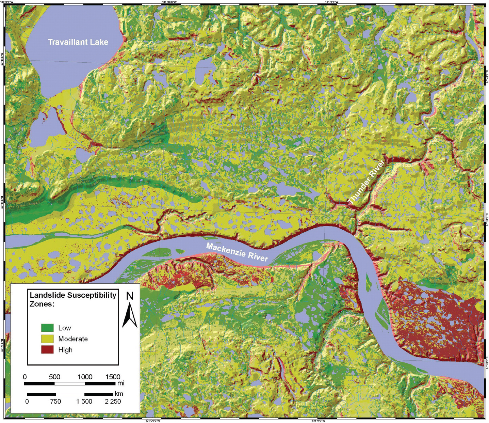
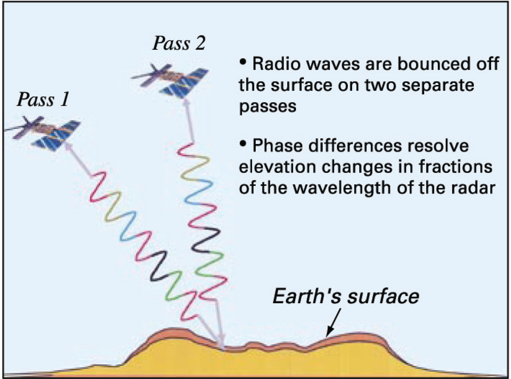
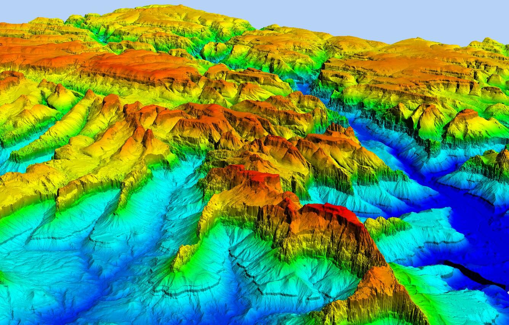

Monitoring SystemsNakkutigisassat
Background about technology used for landslide susceptibility detection and warningSisimmasunik nakkutigisassanik atortunik paasissutissat
[Untranslated Text]
Landslides can be detected in advance by mapping potentially hazardous areas, remote sensing with GIS and SAR technology, and seismic monitoring.
Regional hazard maps, which rely on aerial photography and geologic data, provide a general sense of where landslide problem areas are located. Community and site level hazard maps provide specific information about how hazards may impact land use, city zoning, and construction. Landslide hazards are mapped based on where landslides have occurred in the past, and where they are likely to occur in the future based on topography, slope angle, and drainage. Mapping is a very convenient method in identifying problem areas, but it does not account for change in terrain over time, which is a pressing issue in the arctic, where rapid permafrost melt quickly alters landscapes.

An example of a landslide susceptibility map from the Geological Survey of Canada in the Northwest Territories [1]
Remote sensing allows for the use of a GIS to overlay maps containing different datasets on top of each other. There are many different factors that dictate whether terrain is susceptible to landslides, and GIS allows many of those factors to be viewed at once. Synthetic aperture radar imaging (SAR) uses satellite sensors that can penetrate fog and rain to create maps of areas that are difficult to access, like most of Greenland. Since satellites can pass over an area multiple times, images they create over time can be compared to show ground movement indicative of a potential landslide.

Schematic showing satellite passes over an area of Earth's surface [1]
Light detection and ranging (LIDAR) imaging is generated by using lasers to penetrate forest cover, which can create detailed and highly accurate digital elevation models (DEMs). LIDAR is very expensive, and does not have SAR's ability to photograph through fog and rain, but it creates very clear and detailed maps.

LIDAR DEM image of Zion National Park [2]
Hazard areas can also be monitored by humans in the field, using instruments that can detect slope movement, in order to provide real time information about upcoming landslides. This method can be challenging to utilize, due to the expenses of hiring people to actively work in the field, as well as the objective hazard of working in a potentially dangerous zone or even an active landslide.
Recently, work has been put into understanding landslides in the arctic, specifically Greenland. ArcticDEM, which is a digital elevation modeling technology, has been used to map surface elevation change over time in Greenland, and therefore create a comprehensive map of landslides that have occurred between 2010 and 2020. The use of remote sensing to create DEMs to identify large landslides and historical problem areas is crucial in understanding which areas of Greenland are particularly unstable and hazardous, and therefore protecting communities that may be impacted by such disasters.
References
- U.S. Geological Survey. "Appendix B: Interferometric Synthetic Aperture Radar (InSAR)." USGS Circular 1325. https://pubs.usgs.gov/circ/1325/pdf/Sections/AppendixB.pdf
- U.S. Geological Survey. "LIDAR-Derived Digital Elevation Model over Zion National Park, Utah." USGS Media. https://www.usgs.gov/media/images/lidar-derived-digital-elevation-model-over-zion-national-park-utah
- Springer Link. "Landslide monitoring and mapping." Springer. https://link-springer-com.offcampus.lib.washington.edu/article/10.1007/s10346-025-02500-3